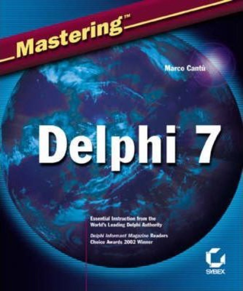

Mastering Delphi 7
Published by : Sybex
Writed by : Marco Cantú
Published date : 26/02/2003
ISBN-10 : 0782128742
ISBN-13 : 9780782142013
Language : English
Web site : https://www.marcocantu.com/md7/
About Mastering Delphi 7
Still the Best Delphi Resource--Now Fully Updated and Expanded
Whether you're new to Delphi or just making the move from an earlier version, Mastering Delphi 7 is the one resource you can't do without. Practical, tutorial-based coverage helps you master essential techniques in database, client-server, and Internet programming. And the insights of renowned authority Marco Cantù give you the necessary knowledge to take advantage of what's new to Delphi 7--particularly its support for .NET. Coverage includes:
* Creating visual web applications with IntraWeb
* Writing sockets-based applications with Indy
* Creating data-aware controls and custom dataset components
* Creating database applications using ClientDataSet and dbExpress
* Building client-server applications using InterBase
* Interfacing with Microsoft's ADO
* Programming for a multi-tiered application architecture
* Taking advantage of Delphi's support for COM, OLE Automation, and COM+
* Taking advantage of Delphi's XML and SOAP support
* Implementing Internet protocols in your Delphi app
* Creating UML class diagrams using ModelMaker
* Visually preparing reports using RAVE
* Using the Delphi language to create your first .NET programs
Where to buy ?
This book has the ISBN13 "9780782142013".
If it is still available for sale, you can order it in your favorite bookstore, by its publisher or online at
Amazon CA,
Amazon FR,
Amazon JP,
Amazon UK or
Amazon USA depending on your country.
Table of content
Introduction.
Part I: Foundations.
Chapter 1: Delphi 7 and Its IDE.
Chapter 2: The Delphi Programming Language.
Chapter 3: The Run-Time Library.
Chapter 4: Core Library Classes.
Chapter 5: Visual Controls.
Chapter 6: Building the User Interface.
Chapter 7: Working with Forms.
Part II: Delphi Object-Oriented Architectures.
Chapter 8: The Architecture of Delphi Applications.
Chapter 9: Writing Delphi Components.
Chapter 10: Libraries and Packages.
Chapter 11: Modeling and OOP Programming (with ModelMaker).
Chapter 12: From COM to COM+.
Part III: Delphi Database-Oriented Architectures.
Chapter 13: Delphi?s Database Architecture.
Chapter 14: Client/Server with dbExpress.
Chapter 15: Working with ADO.
Chapter 16: Multitier DataSnap Applications.
Chapter 17: Writing Database Components.
Chapter 18: Reporting with Rave.
Part IV: Delphi, the Internet, and a .NET Preview.
Chapter 19: Internet Programming: Sockets and Indy.
Chapter 20: Web Programming with WebBroker and WebSnap.
Chapter 21: Web Programming with IntraWeb.
Chapter 22: Using XML Technologies.
Chapter 23: Web Services and SOAP.
Chapter 24: The Microsoft .NET Architecture from the Delphi Perspective.
Chapter 25: Delphi for .NET Preview: The Language and the RTL.
Appendix A: Extra Delphi Tools by the Author.
Appendix B: Extra Delphi Tools from Other Sources.
Appendix C: Free Companion Books on Delphi.
Index